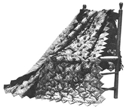
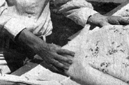
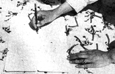
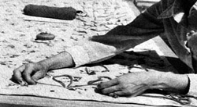
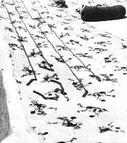
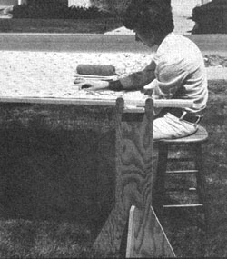
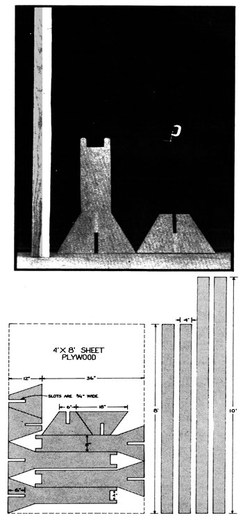

Ever admire the beauty of a traditional homemade quilt . . . and then shudder at the thought of all the stitches that hold the masterpiece together? Well, there's a simpler alternative: tying. You can tie a frayed blanket between layers of cotton or gingham print in a fraction of the time you'd spend on conventional quilting. All you need is a simple frame (see the instructions with this article), a few inexpensive materials and the barest number of spare hours.
Baby quilts are approximately 3' X 5' (standard crib size) and, when tied, can be made in an afternoon. Two-yard throws-afghan-size car blankets, or stadium robes-are 4' X 6' and also take only a few hours. They get their name because the quilt top and backing 'each requires two yards of 45" fabric.
A quilt that measures 7' X 9' hangs to the floor on a twin bed and Vill fit a full-size bed as a comforter (a cover that usually lies on the. mattress only and is supplemented with a dust ruffle to conceal the box springs). A quilt (8' X 9') that completely covers a full-size bed will serve as a comforter on a king-size or large water bed.
The backing or underside of a tied quilt should be a closely woven, non-slippery fabric. (Covers backed with nylon, satin, rayon and some polyesters tend to slide off the bed.) Cottons, flannels and sheets are all good materials for this purpose. I prefer flannel myself: It's durable and warm, won't slip and feels good against the skin. Like all the makings for my quilts, it's also washable.
Filler or batting may consist of an old blanket (two if they're thin). Otherwise use cotton or polyester quilt batting, which is available at most yard goods stores or from Sears.
The quilt top can be scraps put together as gay patchwork, or you can use cotton prints, flannel, gingham or a colorful sheet Be sure to preshrink both the top and backing before "putting up" the quilt.
At this point-before you go any farther-make sure that :he quilt's top and backing are the same size. Use a straight pin to mark the center of each edge.
The backing goes on your frame first, with the center points of its edges matched to the center points marked on- the -boards and pinned to the frame's cloth covering. Then, working from the center to the ends of each side, continue to pin the fabric to the stretcher.
Next, spread the blanket filler or batting evenly over the taut cloth. Be sure there are no lumps.
The top is then laid over the filler and pinned to the frame just as the backing was. Adjust the C-clamps that hold your frame together at the corners so that the quilt is taut but not strained . . . and you're ready to tie.
Ties should be evenly spaced and no more than two inches apart. They can be arranged in rows or staggered:
If the quilt top has a geometric or regular pattern, let the Print on the fabric space your ties for you. For example, with one-inch checked gingham you'd want a knot in the middle-or at the corner-of every other square. Use a grid to space the ties on a scattered pattern. This guide can be made of a 9" X 12" Piece of cardboard with holes punched in it at the proper intervals. Lay the grid on the material and mark the place for each fastening with a pencil, as shown in one of the photos that accompany this article.
Either yarn or crochet cotton can be used for the tying. Choose the shortest needle you can find that has a big enough eye and thread it with a three-foot length of yarn or string. This should be pulled through the eye until the ends are even, to create a double strand, but should not be knotted. If possible, wear a thimble while working.
Tying is always done from the top of the quilt, with one hand underneath to make sure the needle goes through all thicknesses. This is very important. If the thread or yarn doesn't go through all the way so that it shows on the back, you must take it out and put it in again. When in doubt, crawl under the quilt and look! (Sometimes, if the fabric is heavy or has a firm finish, the needle sticks fast in the cloth sandwich and has to be pulled through with pliers.)
As you work from the top, take as small a stitch as possible down and back up through all layers of cloth at the first marker in one of the end rows. Leave a two-inch tail of thread, take a second stitch over the first, tie a square knot and pull it tight. Don't cut the thread! just go on to the next mark and repeat the process until all the yarn on the needle is used.
At that point go back and snip the thread in two halfway between each pair of ties. Leave the tails on, and try to keep them all the same length. If you spaced the fastenings evenly and made the breaks midway between, you shouldn't have to do any trimming. And, believe me, it's much faster to snip the connections between a whole line of knots than to do so after you finish each one.
When you've tied as far toward the center of the quilt as you can reach from one end, repeat the process from the other. Then release two C-clamps to free one short side of the frame and "roll up" the tied material around that board-removing pins as necessary along the sides-until you come to fresh territory. Replace the clamps so that the fabric is pulled snugly taut and continue in this fashion until the tying is done. (Don't try to roll all four sides of the stretcher . . . work only from the two opposing ends toward the middle.) When the quilt is done, remove it from the frame.
To finish your quilt in the simplest way, just turn the raw edges of the top (down and in) and the backing (up and in) to the inside and blind stitch by hand or top stitch by machine.
If you prefer an ornamental border, pin the lace, rickrack or whatever to the top-right sides together-about 1/4 inch from the fabric's raw edge. Machine stitch the trim to the quilt top. Then turn under 1/4 inch of the backing's raw edge and pin it-all around the cover's four sides-to the turned, trimmed edge of the top. Blind stitch by hand or carefully top stitch by machine through all thicknesses.
If you've used washable materials and preshrunk them be fore tying, the finished quilt can be machine washed and tumble dried . . . a good point to remember during its making, since you can expect your hand-tied cover to keep you warm through a good many cold winters in the future. That's quite a return for a few hours of pleasant handwork!
To ensure that a finished quilt will lie smoothly, without pulls and puckers, its layers of material should be stitched together while stretched on a frame. This structure may be very simple or somewhat more elaborate . . . depending on how much quilting you expect to do.
The simplest frame consists of:
[1] Four boards (suggested size 1 " X 4") approximately 8-1/2' long.
[2] Four C-clamps.
[3] Four chairs of equal height.
Scrap lumber works fine. Width and thickness aren't critical, but do sand the wood smooth so you won't get splinters while quilting.
Lay two of the boards on the floor parallel to each other, cross them with the other two to form a rectangle and fasten the frame together with C-clamps. Set a chair at each corner of the structure and lift the frame to rest on the tops of the backs. Securely tie each comer to its support with rope or strips of cloth.
The fabric for the quilt is fastened to the frame with thumbtacks.
If you do a lot of quilting, you'll want a sturdier frame that's easier to use. I've found the following design most satisfactory for both stitching and tying.
You will need:
[1] Two boards (1" X 4", preferably hardwood) 8' long.
[2] Two boards (1" X 4", preferably hardwood) 10' long.
[3] Four C-clamps.
[4] One 4' X 8' sheet of 3/4" plywood.
[5] Four strips of cloth (an old sheet works fine) 5" wide, two pieces 8' long and two pieces 10' in length.
[6] Some short flathead nails.
STEP 1: MAKE THE LEGS OF THE FRAME: Cut the plywood according to the pattern shown to give you four each of the two types of leg sections. You can see the two basic units-plus a frame board and a C-clamp-in the accompanying photo.
Each leg is formed by fitting the taller plywood piece at right angles down over the shorter. A frame board will then rest in the "U" at the top of the upright.
STEP 2: ATTACH CLOTH STRIPS TO THE FRAMING BOARDS: Cut an old sheet into strips as directed in [5] above, and fold the raw cloth in 1/2" on each lengthwise edge. Then fold each strip in half and machine stitch the turned-under edges together. Finally-using short, flathead nails-attach one strip of the doubled fabric to each of the framing boards. Position the cloth so that its single-fold edge is even with an edge of the board and fasten it down by nailing through the stitched edge (which will be near the center of the board as shown in the photo).
STEP 3: MAKE A MARK in permanent ink at the center of each of the frame's boards (to be used later as a guide for the attachment of the quilting material).
STEP 4: ASSEMBLE THE FRAME: Fit the leg pieces together and place the supports at the corners of a rectangle measuring about 7' X 9'. Rest the two 10' boards on the legs so the sides are parallel. Then lay the two shorter pieces across the longer ones to form right angles and fasten the rectangle together at the corners with C-clamps.
|
 Each tied quilt is made up of backing-filling-top ""sandwich"". Note, in this photo, how C-clamps are used to old the quilting frame together. |
 If your quilt's top has a ""scattered"" pattern, you can lay out its grid of ties with a pattern made from a 9"" X 12"" piece of scrap cardboard. |
 Start each row of ties by stitching down and back up through all thicknesses of your quilt's material twice and then making a snug square knot. |
|
 It's faster and easier to make all the ties you can with each 3-foot length of yarn . . . and then go back to snip the thread in two between each tie. |
 The completed quilting frame in action. Note how legs go together and framing boards fit into notches at top of each of the long vertical uprights. |
 |
|
|
 |
|